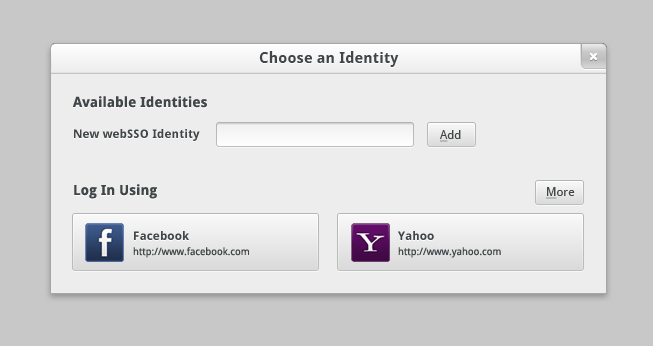
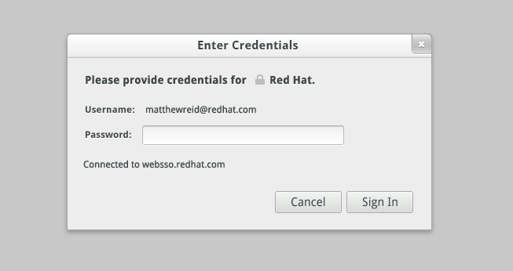
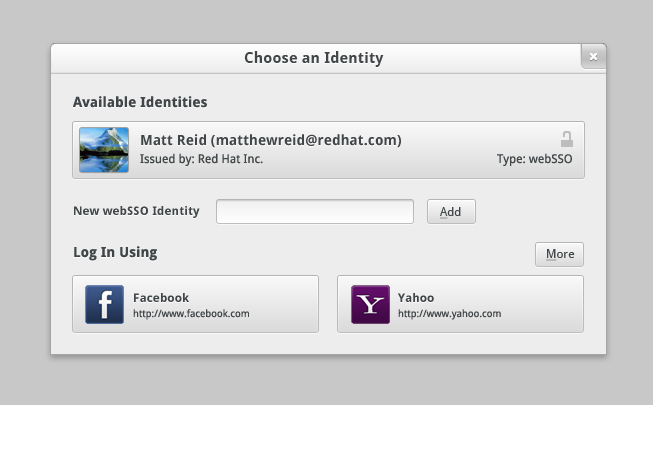
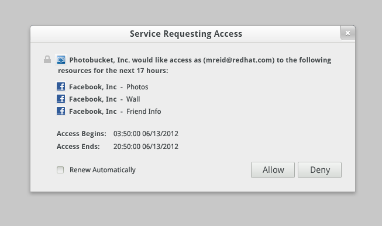
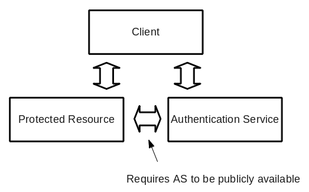
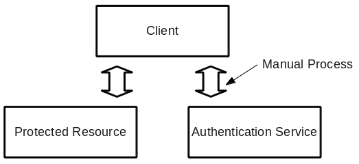
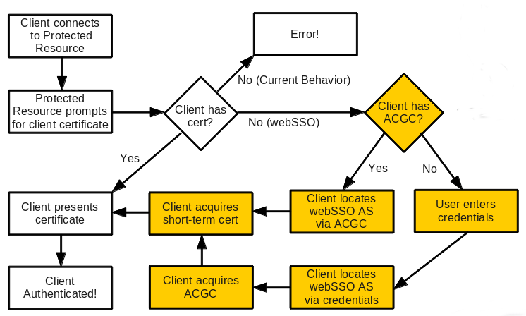
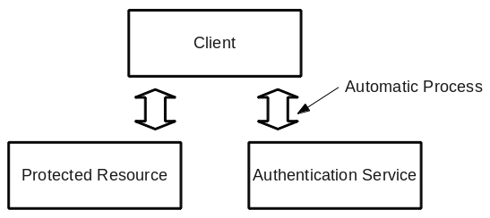
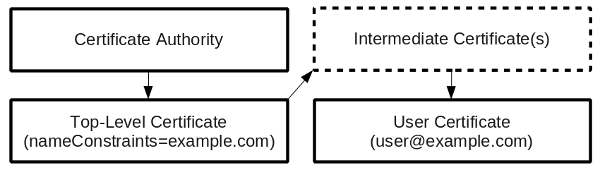

WebSSO is a new cloud-centric, federated authentication system developed to solve the problems of deploying authentication across heterogeneous infrastructures. It is a thin policy layer on top of widely deployed and trusted protocols such as HTTPS and TLS client certificate authentication. It provides:
- Single sign-on across local, Internet and cloud infrastructures
- Globally unique identities via existing certificate authorities
- Decentralized authentication
- Credential delegation
- Depoyment on existing HTTPS stacks
- Multi-protocol support (i.e. not restricted to HTTP)
- Cryptographic trust validation of all parties
WebSSO's Motivation
It is true, there are lots of authentication protocols available. Kerberos, for instance, is a widely deployed, mature protocol for local infrastructure. However, it has almost no Internet presence, mostly because identity providers are not willing to expose their Kerberos servers to the Internet. Kerberos also competes in the encryption space with SSL/TLS, the hands down winner in the web-enabled world. Lastly, Kerberos has difficulty scaling in large, flat topologies.
Outside of the enterprise context, OpenID has a large presence on the Internet. As one of the first attempts at creating a federated identity system in the Internet, it has accomplished remarkable things. However, OpenID doesn't do single sign-on. Nor does it validate all parties in the authentication transaction, leading to problems with security/phishing. When combined with OAuth, OpenID can perform credential delegation. But implementing these protocols is quite complex, leading to bugs that compromise security. OpenID is also tightly tied with the web-based world and has gained no traction outside this environment.
The true problem arises when the local infrastructure and Internet worlds meet. If you want to use your enterprise identity on the Internet or in a cloud service, you're pretty much out of luck. The same is mostly true with using your Internet identity in the enterprise. Thus, webSSO came about as we began to envision a world where there was no division between local, Internet and cloud infrastructures.
User Experience
When a user first encounters a webSSO Protected Resource, he or she will be prompted to log in. In this case, the user has not acquired any identities and the Protected Resource has suggested that the user can use Facebook or Yahoo! to log in.
Since the user wants to use his own webSSO identity, he types in his user ID and domain and clicks add. The client will look up this user's webSSO server and attempt to login:
Once the user has established his/her webSSO identity, it can be used for subsequent logins without entering credentials again:
WebSSO can also be used in conjunction with traditional X.509 certificates:

When a Protected Resource desires to acquire data from another Protected Resource, it can prompt the user to grant it access. This is called delegation:
Under the Covers
A typical authentication system looks something like this:
SSL/TLS client certificate authentication provides a unique feature in that the Authentication Service (which issues the certificate) and the Protected Resource do not need to communicate. This permits the Authentication Service to live behind a firewall. The downside is that the process for obtaining a certificate has typically been manual and error prone:
WebSSO is a simple policy layer on top of SSL/TLS client certificate authentication. When connecting to a SSL/TLS-encrypted resource, the resource can ask you to authenticate by providing a certificate. In a traditional TLS transaction, if you don't have a certificate the operation simply fails. However, in the webSSO case, if you do not have an appropriate certificate, you can simply use webSSO to obtain one:
The end result is that we get the benefit of TLS authentication without the drawback of the manual process:
Globally Unique Identities
WebSSO can provide private trust relationships via manual certificate exchange. But one of the more interesting features of WebSSO is its ability to provide globally unique identities. This works by utilizing the pre-existing system of public X.509 certificate authorities to validate domain ownership. For instance, if you want to bring up a secure website on example.com, you will need to obtain a certificate from a trusted certificate authority. This authority will verify that you are the proper owner of your domain and issue you a certificate vouching for this.
WebSSO is really no different. If you want to bring up an Authentication Service, you obtain a certificate from an authority proving your domain (example.com). This permits you to issue user certificates for user@example.com.
Crossing Enterprise Boundaries
In webSSO, authentication is provided at the SSL/TLS encryption channel layer. This means that webSSO can be used wherever SSL/TLS encryption is used to protect a connection. This feature is what permits webSSO to work transparently across local, Internet and cloud infrastructures. For instance, you can use the same identity to log in to your local print and file shares, web sites such as Facebook and Google, and privately contracted cloud services such as HR or virtualization.
However, many organizations are unwilling (for good reason) to expose their Authentication Service to the Internet. WebSSO was designed precisely for this scenario. Since webSSO does not require any contact between the Authentication Service and the Protected Resources to whom authentication will be provided, you can safely host your webSSO server behind the corporate firewall and still permit the use of corporate identities in the public Internet.
Secure Credential Delegation
Sharing data between services has become a critical feature of today's modern web services. Yet most attempts at authentication when sharing data have been handled by proprietary mechanisms or, more recently, the OAuth protocol. In both cases this has been restricted to HTTP- only services. Existing forms of delegation have also created an atmosphere where sharing is unbounded and requires the sharing of passwords.
WebSSO aims to provide an authentication delegation system which:
- Works across any protocol
- Permits cryptographic trust validation of every party involved
- Enforces time limits on all delegation grants
- Does not require the exchange of passwords